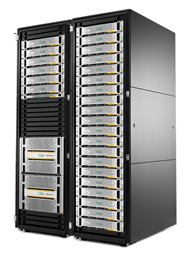

HPE StoreServ 20000 Tech Specs:
- Four Models - StoreServ 20450, 20800, 20850 and 20840
- 20800 Up to 8 controllers
- 20800 Max drives 2304
- 20800 Max SSD 1152
- 20800 Max capacity 9.6 PiB
- 20800 Max cap SSD 8 PiB
- 20800 Max Usable File 512 TiB
- 20800 througHPEut >40 GB/s
- 20800 data cache 128GB / controller
- 20800 Flash Cache 0-32Tib
- 20800 performance ~2.5 Million IOPs
- 20850 Flash only
- 20850 Up to 8 controllers
- 20850 Max drives 1152
- 20850 Max capacity 8 PiB
- 20850 Max Usable File 512 TiB
- 20850 througHPEut >40 GB/s
- 20850 data cache 256GB / controller
- 20850 performance ~3 Million IOPs
- 20840 Hybrid
- 20840 Up to 8 controllers
- 20840 Max drives 2304
- 20840 Max SSD 1152
- 20840 Max capacity 9.6 PiB
- 20840 Max cap SSD 8 PiB
- 20840 Max Usable File 512 TiB
- 20840 througHPEut >40 GB/s
- 20840 Flash Cache 0-48TiB
- 20840 data cache 256GB / controller
- 20840 performance ~3 Million IOPs
- 20450 Flash only
- 20450 Up to 4 controllers
- 20450 Max drives 576
- 20450 Max capacity 4 PiB
- 20450 Max Usable File 512 TiB
- 20450 througHPEut >40 GB/s
- 20450 data cache 256GB / controller
- 20450 performance ~1.8 Million IOPS
- 2 eight core processors
- 2 Gen5 ASICs
- 16 GB fibre channel
- 512 GB internal dual self-encrypt SSD boot drives
- On board 10Gb/s FCoE/iSCSI or 10Gb/s NIC
- SFF SSD 400GB, 1.92TB, 3.84TB, 7.68TB, 15.36TB
- SFF 15K 300GB, 600GB
- SFF 10K 600GB, 1.2TB, 1.8TB
- SFF 7.2K 2TB
- LFF 7.2K 4TB
- SFF SSD encrypt 920GB, 1.2TB, 3.84TB, 7.68TB, 15.36TB
- SFF 15K encrypt 600GB
- SFF 10K encrypt 1.2TB
- LFF 7.2K encrypt 4,6 and 8TB
- 16Gb Fibre Channel ports (0-20 / Node)
- 10GbE iSCSI ports (0-10 / Node)
- 10GbE File Service ports (0-4 / Node)
- 12G Backend SAS ports (96 Max)
- 10GbE RC ports (8 Max)
- Max Base VV 64,000
- Max VV 128,000
- Max VLUNs 256,000
- Max Snaps per VV = 500
- MAX CPG per system 2,048
- Max Domain per system 1,024
- Max iSCSI Initiators 8,192
- Max FC Initiator 8,192
- Max Hosts is ~= Max Initiator/2
- HPE Standard Rack
- Disk 24 per enclosure
- Disk enclosures per rack 20
Features
- Remote Copy Async Streaming
- Thin Provisioning
- Remote Copy
- Thin Dedupe
- Adaptive Flash Cache
- Persistent Ports
- Cache Persistence
- Virtual Domains
- Snapshots
- System Reporter
- AO,DO
- QOS
- Peer Persistence
- Migration tools
- File Persona